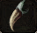

Caruna on Confederation Road (C-7)
Need:
- 37 Level
Splintered claw - x5 |
|
|  | Sharp fang - x5 |
Durable bone - x5 |
Additional inforamtion:
- Splintered claw - Bloody Bats Lv20, at night
- Sharp fang - Most snakes, e.g. Bibron's Boas Lv40, the Foothills of Mt. Jorito, H-7
- Durable bone - Skull Pulverizers Lv32, Nelstadt Plains (any time)(I-9) or Himurart Desert (night)(I-7).
- Completing this quest opens the next quest for upgrading gear. You need to walk on the trigger in your nation. (message from the Caruna). The Master is standing at Nelstadt Plains (G-10). Bring 10 Silver crystals.
- Trigger spot Kingdom: I-4
- Trigger spot Confederation: E-11
- Trigger spot Empire: I-9
Reward:
- 10000 gold
- 550000 xp